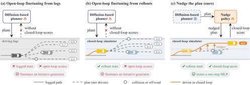
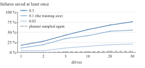

Motivation
Diffusion-based planners model the multimodal driving behavior in human demonstrations. However, they still collide or leave the road in closed-loop driving, due to covariate shift. RL post-training can address this, but RL on a diffusion-based planner has two difficulties.
Difficulty 1: iterative denoising
A diffusion-based planner produces one plan with K denoising steps, so the likelihood of the plan is intractable. Policy-gradient methods therefore treat every denoising step as one RL action. This multiplies the RL horizon by K, here K = 10. Value-based methods backpropagate the critic's gradient through all K steps, which is costly and can destabilize training.
RL decisions in one episode of 150 planning steps: finetuning the planner , PlanNudge .
an RL action frozen, a part of the environment
Difficulty 2: receding-horizon execution
The planner outputs a plan of 8 seconds, which is 80 waypoints. The vehicle follows the plan for only 0.1 seconds. Then the planner makes a new plan. If the RL action is the whole plan, the environment gives feedback on a very small part of the action. This makes value learning hard.
Part of the RL action that changes the driven motion before the next plan: finetuning the planner 1 of 80 waypoints, PlanNudge 2 of 2 numbers. The critic of PlanNudge assigns credit to two numbers, and both matter.
changes the driven motion the next plan replaces this part plans made so far: 1
How do existing methods handle the two difficulties?

All existing methods finetune the diffusion-based planner itself. Both difficulties come from this choice.
Can we post-train a diffusion-based planner without finetuning it?
A first test: random nudges
We keep the planner fixed and add small random adjustments to the speed and the curvature of its plans. We test this on the 72 Val14 scenarios in which the pretrained Diffusion Planner fails.
- With random nudges, 53 % of these scenarios reach a score of at least 50 in at least one of 20 rollouts.
- Sampling the planner again with new diffusion noise, without a nudge, does this in only 2 of 72 scenarios, even with 50 rollouts.
So a small adjustment of speed and curvature is often enough. A learned policy only has to find the right adjustment.

Try it: nudge a plan yourself
The gray dashed line is the base plan of the frozen planner. With this plan, the vehicle hits a pedestrian. Move the two sliders to change the plan. These two numbers are the complete action space of PlanNudge.
What this demo shows. The transform is the one in the paper: the speed offset grows over 1.1 s and then stays constant, and the curvature offset bends the first 1.5 s of the plan. The button applies the largest offsets that the trained policy used in the pedestrian video above (−0.36 m/s and +0.012 m⁻¹). What it does not show. The scene is illustrative, and the demo applies one nudge to one plan. In closed loop, the vehicle follows a plan for 0.1 s, the planner makes a new plan, and the nudge policy outputs a new nudge. For this reason the far part of a nudged plan, which here leaves the lane, is never driven.
How PlanNudge works
The frozen planner, the plan transform, and the simulator form the environment. The nudge policy and its critic form the agent. Select a step.

Why this design removes both difficulties
- Iterative denoising. The nudge policy makes one decision per plan in one forward pass, for any number of denoising steps. Standard off-policy RL applies directly.
- Receding-horizon execution. The action has two dimensions, and both change the part of the plan that the vehicle drives. The critic assigns credit to two numbers, not to 80 waypoints.
- The pretrained planner is preserved. The planner keeps its multimodal distribution over maneuvers. A zero nudge returns the plan of the pretrained planner exactly, and the nudge policy outputs a zero nudge before training.
Results on nuPlan
| Type | Method | Val14 | Test14-hard | Test14-random | RL steps | |||
|---|---|---|---|---|---|---|---|---|
| NR | R | NR | R | NR | R | |||
| Expert | Log replay | 93.53 | 80.32 | 85.96 | 68.80 | 94.03 | 75.86 | – |
| Imitation learning | PLUTO | 88.89 | 78.11 | 70.03 | 59.74 | 89.90 | 78.62 | – |
| Diffusion Planner | 89.87 | 82.80 | 75.99 | 69.22 | 89.19 | 82.93 | – | |
| Flow Planner | 90.43 | 83.31 | 76.47 | 70.42 | 89.88 | 82.93 | – | |
| DFP | 90.33 | 79.97 | 76.91 | 63.56 | 90.69 | 81.96 | – | |
| Diffusion Planner (DDIM) | 90.00 | 83.22 | 75.74 | 68.93 | 89.99 | 82.70 | – | |
| RL post-training | Open-loop finetuning from logs | 90.09±0.16+0.09 | 84.35±0.20+1.13 | 76.39±0.89+0.65 | 70.42±0.20+1.49 | 89.95±0.43−0.04 | 85.02±0.23+2.32 | – |
| PlannerRFT | 89.96 | 84.46 | 77.16 | 72.21 | 90.76 | 85.80 | 40 M | |
| PlanNudge (ours) | 91.07±0.25+1.07 | 85.00±0.23+1.78 | 77.16±0.32+1.42 | 73.44±0.63+4.51 | 91.03±0.65+1.04 | 86.09±0.47+3.39 | 6.2 M | |
Closed-loop scores on nuPlan, official devkit. NR: non-reactive traffic. R: reactive traffic. All RL methods start from the Diffusion Planner (DDIM). Our rows show the mean and the standard deviation over six runs, and below them the change against the pretrained planner. Bold: the highest RL post-training result in each setting. Blue: an improvement of more than 1 point. Red: worse than the pretrained planner.

What matters for off-policy RL
The curves show the change of the Val14 score during training, for PlanNudge and for three variants, in our simulator.
- Shape the reward. A small safety penalty at every step gives a higher score than the terminal score alone.
- Use multi-step returns. With 1-step returns, most of the gain disappears.
- Use temporally correlated exploration noise. Independent Gaussian noise gives a lower gain.
Visualizations
Each video shows the same scenario twice: the pretrained planner (top) and PlanNudge (bottom). Gray: the pretrained planner. Orange: PlanNudge. Dashed lines: plans, drawn for their first 4 s. Solid lines: driven paths.
Citation
@article{plannudge,
title = {Your Diffusion-Based Driving Planner Only Needs a Nudge},
author = {Anonymous Authors},
note = {Under review},
year = {2026}
}